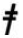
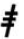

Les nombres sont utilisés de différentes manières dans la feuille de scorage officielle. Ils sont principalement utilisés pour identifier les joueurs de l’équipe défensive comme ceci :
| 1 Lanceur | 4 Seconde base | 7 Champ gauche |
| 2 Receveur | 5 Troisième base | 8 Champ centre |
| 3 Première base | 6 Arrêt court | 9 Champs droit |
En addition aux joueurs défensifs, les numéros de un à neuf sont aussi utilisés pour identifier les batteurs et les actions qui peuvent intervenir dans le jeux durant un passage au bâton. Dans le cas, le numéro correspond au numéro d’ordre du passage au bâton.
Des symboles spéciaux sont utilisés pour indiquer un ‘Designated Hitter’ (DH), ‘Pinch Hitter’ (PH) et un ‘Pinch Runner’ (PR)
Les principaux symboles et abréviations utilisés sont les suivant (Voir l’annexe 1 pour voir cette liste par ordre alphabétique).
|
|
Simple hit faisant gagner une base |
|
 |
Double hit faisant gagner deux bases |
|
 |
Triple hit faisant gagner trois bases |
| HR | Home run |
| IHR | Inside park |
| LS | Un hit sur une balle roulante vers le champ gauche |
| RS | Un hit sur une balle roulante vers le champ droit |
| MI | Un hit sur une balle roulante vers le champs centre |
| LL | Un hit sur une fly le long de la ligne du champ gauche |
| RL | Un hit sur une fly le long de la ligne du champ droit |
| LC | Un hit sur une fly entre le champ gauche et le champ centre |
| RC | Un hit sur une fly entre le champ droit et le champ centre |
| GR | Hit sur une balle roulante |
| SH | Sacrifice Hit (Sacrifice Bunt) |
| SF | Sacrifice fly |
| B | Bunt |
| FSF | Sacrifice Fly dans la zone des fausse balles |
| KL | StriKeout regardé |
| KS | StriKeout Swingué |
| BB | But sur balle |
| IBB | But sur balle Intentionel |
| BK., bk. | BalK |
| PO | Pick Off |
| HP | Hit by Pitch |
| PB., pb. | Balle passée |
| WP., wp. | Lancer fou |
| FF. | Fly |
| F. | Fly dans la zone des fausses balles |
| L. | Line drive |
| FL. | Line drive dans la zone des fausses balles |
| P. | Pop Fly |
| FP. | Pop Fly dans la zone des fausses balles |
| E. | Erreur décisive |
| E.T | Erreur décisive de lancé |
| E.F | Erreur décisive sur une Fly |
| E.L | Erreur décisive sur une Line drive |
| E.P | Erreur décisive sur une Pop |
| e. | Erreur non décisive |
| e.T | Erreur non décisive de lancé |
| GDP. | Frappe au sol entraînant un double jeu forcé |
| SB. | Base volée |
| CS. | Caught Stealing |
| OB., ob. | Obstruction |
| INT | INTerférence |
| OBR. | Out By Rule |
| FC. | Choix défensif |
| O. | Balle occupée (Choix défensif) |
| T. | Avance sur un lancé (Choix défensif) |
| O/. | Advance sur indiférence /Choix défensif sur une tentative de vol |
| IF. | Infield Fly |
| LT | Passage au bâton manqué |
| A. | Jeu d'appel |
| DH | Frappeur désigné |
| PH | Frappeur d'urgence |
| PR | Coureur d'urgence |
| TIE | Tie Break |
| R | Lanceur droitié |
| L | Lanceur gauché |
| W | Lanceur gagnant |
| L | Lanceur perdant |
| S | Lanceur de sauvegarde |